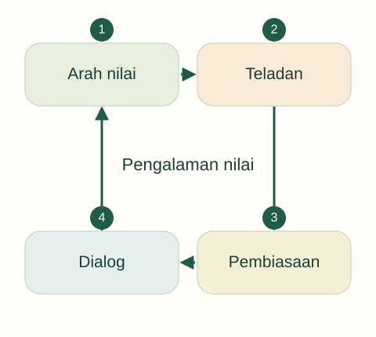

Tujuan pembelajaran
- Menguraikan pesan pendidikan dalam nasihat Luqman
- Membedakan pembiasaan, keteladanan, dan dialog
- Memilih bukti perilaku yang relevan dengan tujuan nilai
Nasihat Luqman sebagai sumber nilai
Al-Qur’an Surah Luqman 31:13–19 memuat nasihat dalam relasi orang tua dan anak, dengan tema tauhid, syukur, tanggung jawab, kesabaran, serta sikap kepada orang lain. Bagian ini dapat menjadi sumber untuk membahas arah pendidikan Islam. Mahasiswa perlu membedakan isi normatif ayat, tafsir, dan pilihan pedagogis yang mereka usulkan. Misalnya, guru menghubungkan syukur dengan merawat makanan yang diterima. Hubungan tersebut perlu dijelaskan dengan bahasa dan tindakan yang dapat dijangkau anak.
Kebiasaan membuka kesempatan memahami
Pembiasaan memberi struktur dan kesempatan mengulang tindakan. Keteladanan membuat nilai terlihat pada perilaku nyata pendidik. Dialog memberi anak kesempatan menghubungkan tindakan dengan alasan dan akibat yang dekat dengan pengalaman. Ketiganya dapat digunakan saat makan. Anak mengenali urutan persiapan, melihat guru menawari bantuan dengan sopan, dan bercakap tentang bagaimana memastikan semua teman bisa makan dengan nyaman.
Memilih tujuan dan membaca bukti
Tujuan perlu cukup jelas agar guru tahu pengalaman apa yang akan disediakan dan informasi apa yang bermakna. Mengikuti lafal doa menunjukkan kemampuan berpartisipasi dalam satu rutinitas. Menawarkan bantuan dan menyebut alasan memberi informasi tentang respons sosial dalam situasi tertentu. Guru dapat mencatat tindakan itu dengan konteksnya dan menyediakan kesempatan lain untuk bertindak. Perkembangan nilai memerlukan pengamatan yang proporsional terhadap apa yang tampak.
Martabat anak dan peran RA
Kurikulum RA mengikuti pedoman yang berlaku pada satuannya. Pendidik dapat memilih contoh nilai Islam dari percakapan dan kegiatan nyata sekaligus menjaga martabat dan perlindungan anak. Bila anak diam saat doa, guru dapat memberi waktu, mencontohkan dengan tenang, atau menawarkan partisipasi bertahap. Saat makanan tumpah, guru dapat menunjukkan cara membersihkan dan mengajak anak membantu sesuai kemampuan. Tindakan guru memberi contoh tanggung jawab dalam keadaan sehari-hari.
Diagram konsep

Bagaimana rutinitas doa dapat dihubungkan dengan pengalaman memahami nilai?

Sebelum makan, beberapa anak mengikuti doa bersama. Saat satu anak lupa membawa buah, temannya menawarkan sebagian. Guru bertanya apa yang membuat temannya memilih berbagi.
- Apa yang ditunjukkan saat doa?
- Tindakan apa yang terjadi ketika ada teman yang membutuhkan bantuan?
Pembahasan kasus
Pada kasus makan, guru dapat menghargai niat membantu dan menanyakan kebutuhan teman sebelum berbagi. Di kesempatan lain, amati apakah anak memperhatikan keperluan temannya ketika memakai alat bersama.
Buka contoh penalaran setelah mencoba
Bedakan satu bukti pelafalan doa dan satu bukti tindakan berbagi.
Mengikuti lafal menunjukkan partisipasi dalam doa. Menawarkan buah menunjukkan satu tindakan berbagi dalam konteks itu.
Latihan terbimbing
Pilih satu nilai dari Surah Luqman. Tuliskan contoh teladan guru, rutinitas yang memberi kesempatan mencoba, dan pertanyaan yang dapat dijawab anak dengan bahasanya sendiri.
Latihan mandiri
Susun satu skenario penanganan alat bersama yang mengembangkan amanah. Jelaskan sumber nilai, tindakan pendidik, pilihan anak, dan bukti yang dapat diamati.
Lihat pembahasan
anak menanyakan apakah temannya ingin buah, lalu menawarkan sebagian
Tindakan dan ucapan itu relevan untuk menilai perhatian kepada teman dalam peristiwa tersebut.
Refleksi calon pendidik
Apakah tindakan saya saat terjadi kesalahan sejalan dengan nilai yang saya ajarkan?
Catatan hanya disimpan di peramban ini. Tidak dikirim kepada dosen.
Referensi dan bacaan pendamping
- Al-Qur’an. Surah Luqman (31), ayat 13–19.Rujukan ayat untuk pembacaan nilai pendidikan. Portal tidak mengutip terjemahan panjang atau mengklaim tafsir tunggal. Gunakan tafsir yang kredibel untuk pendalaman.
- Kementerian Agama. (2025). Keputusan Menteri Agama Nomor 1503 Tahun 2025 tentang Perubahan atas Keputusan Menteri Agama Nomor 450 Tahun 2024 tentang Pedoman Implementasi Kurikulum pada Raudhatul Athfal, Madrasah Ibtidaiyah, Madrasah Tsanawiyah, Madrasah Aliyah, dan Madrasah Aliyah Kejuruan.Rujukan khusus RA dan madrasah. Judul portal JDIH memuat pengulangan kata; bibliografi menormalkan pengulangan itu.
- Republik Indonesia. (2014). Undang-Undang Nomor 35 Tahun 2014 tentang Perubahan atas Undang-Undang Nomor 23 Tahun 2002 tentang Perlindungan Anak.Dibaca bersama UU dasar dan perubahan berikutnya, termasuk UU 17/2016. Materi ini berfokus pada hak anak, bukan penetapan sanksi pidana.